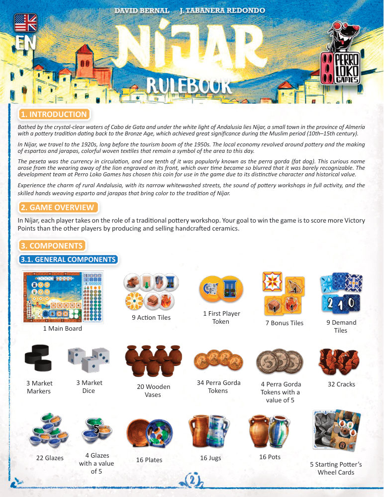
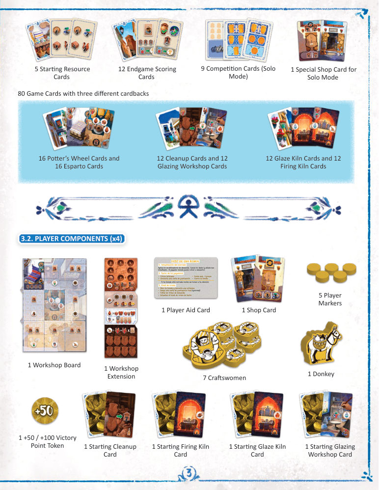
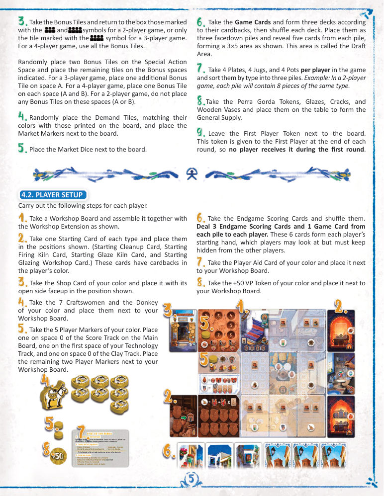
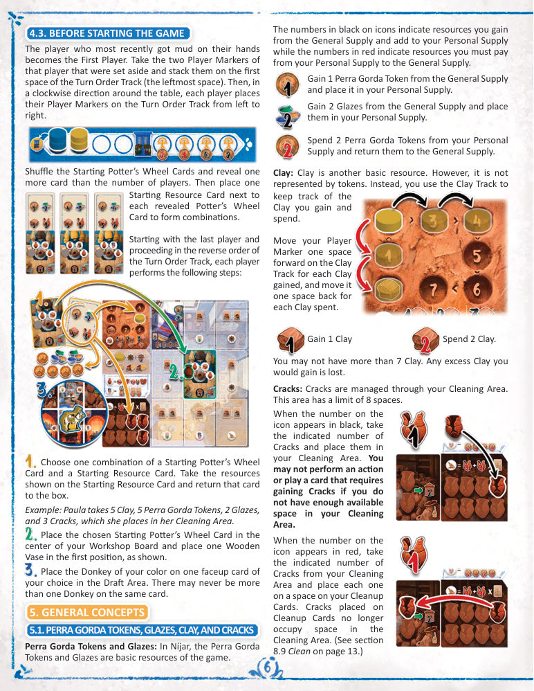
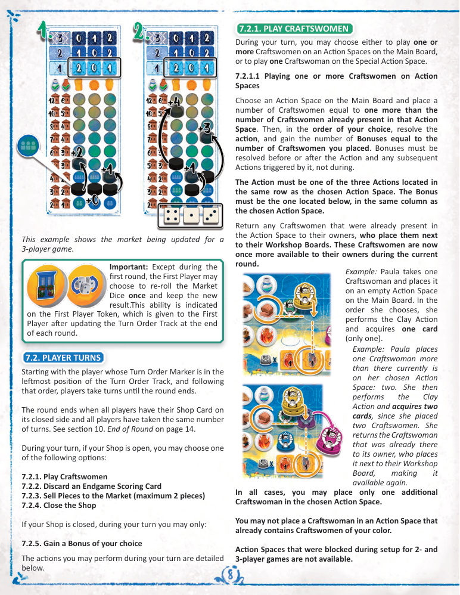
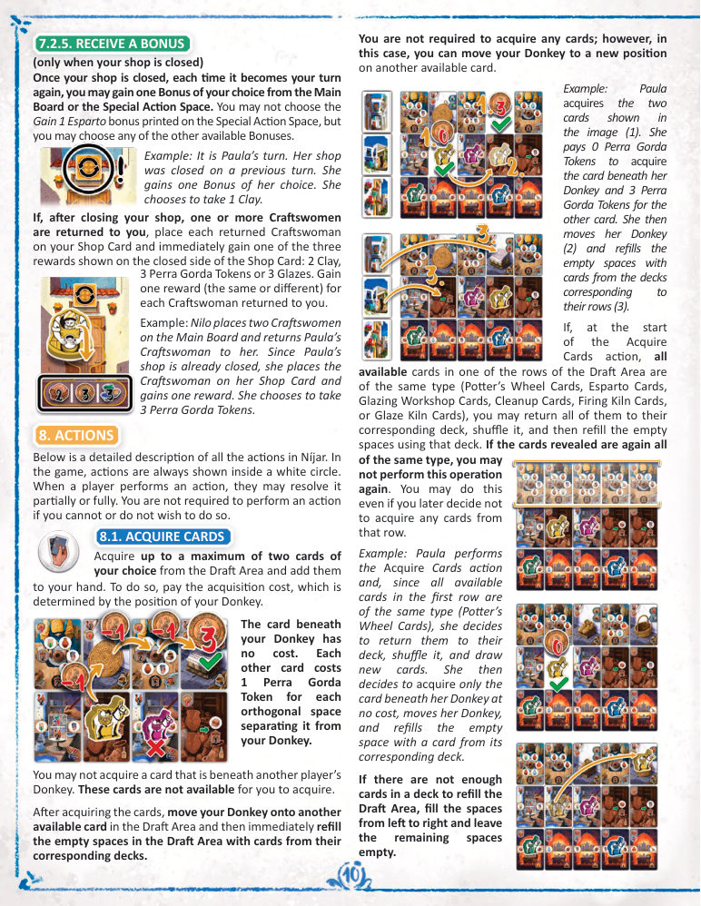
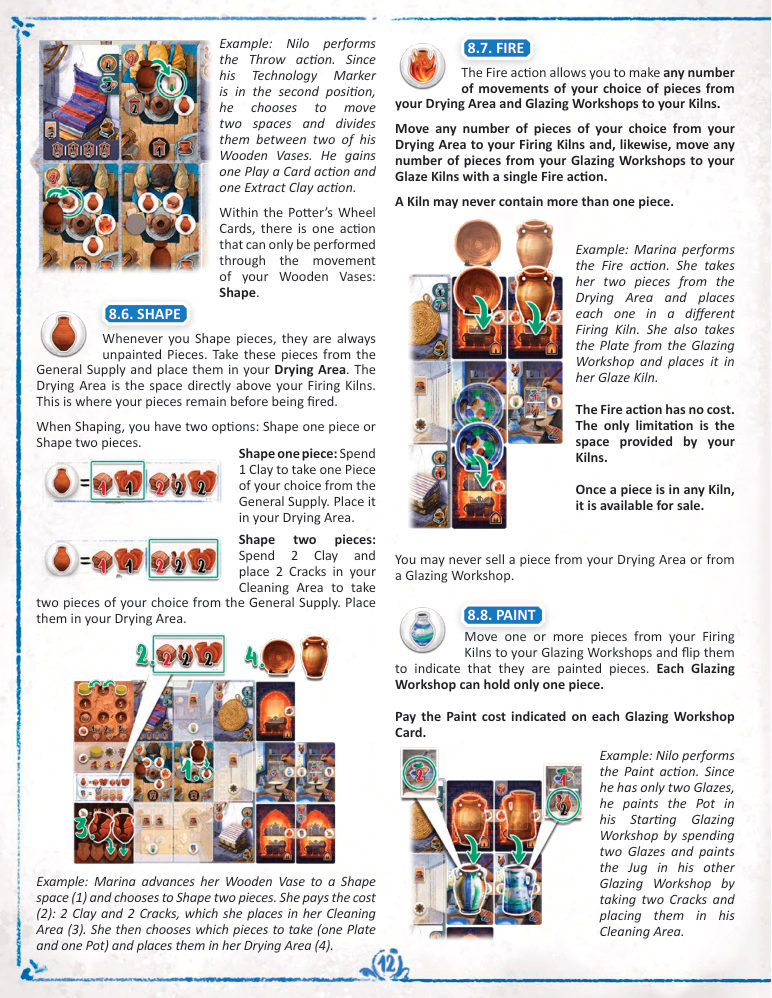
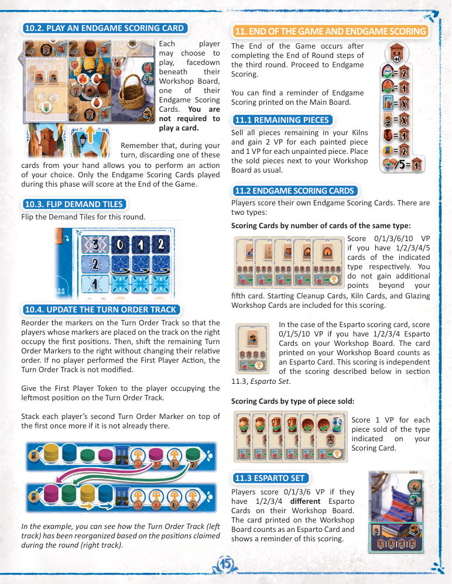
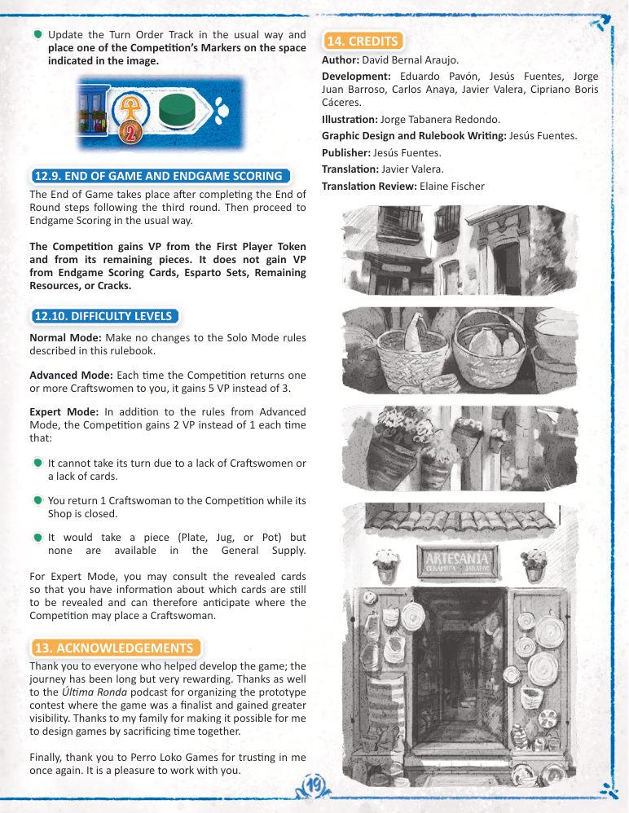
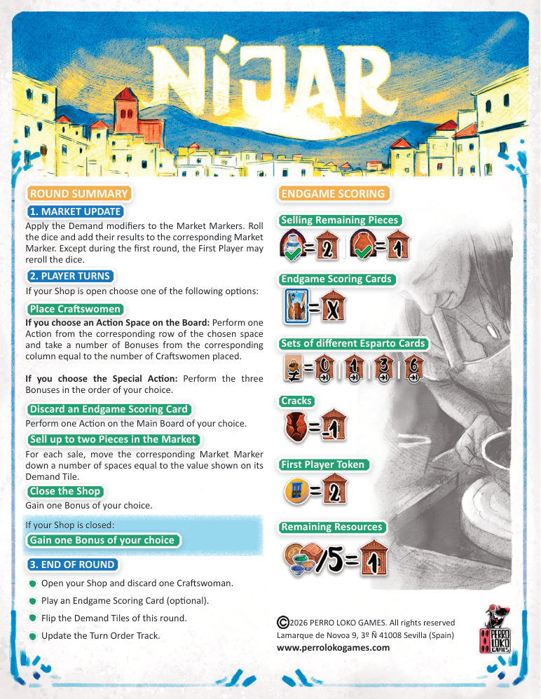

尼哈尔
01简介
在《尼哈尔》里，每位玩家扮演一家传统制陶工坊。你的胜利目标是：通过生产与销售手工陶器，比其他玩家获得更多胜利分。
当年流通的货币是比塞塔，其十分之一被俗称为 perra gorda（意为「胖狗」）。这个古怪的名字源自硬币正面所刻的狮子：长年磨损之后模糊得几乎无法辨认。发行方 Perro Loko Games 正是因为这种独特与历史感，选中了这枚硬币作为游戏货币。

02游戏概览
一局《尼哈尔》进行 3 轮，随后进入终局计分。游戏结束时 VP 最多的玩家获胜。
每一轮分为三个阶段，必须按以下顺序结算：
- 更新市场（Update the Market）
- 玩家回合（Player Turns）
- 回合结束（End of Round）
玩家帮助卡上印有一轮的流程概要。
03配件
3.1 通用配件
| 配件 | 数量 | 说明 |
|---|---|---|
| 主版图 | 1 张 | 含分数轨、市场、行动位、回合顺序轨 |
| 行动板块 | 9 块 | 设置时随机摆放在主版图的行动位上 |
| 起始玩家标记 | 1 个 | 每轮结束时交给回合顺序轨最左的玩家 |
| 奖励板块 | 7 块 | 放在主版图与特殊行动位上 |
| 需求板块 | 9 块 | 市场三行各三块，数值为 2／1／0 |
| 胖狗币 | 34 枚 | 另有 4 枚面值为 5 的胖狗币 |
| 裂纹 | 32 个 | 放入待清理区，可用清理卡消化 |
| 市场标记 | 3 个 | 分别对应盘、壶、罐三列 |
| 釉料 | 22 个 | 另有 4 个面值为 5 的釉料 |
| 市场骰 | 3 颗 | 每轮开始时由起始玩家投掷 |
| 木瓶 | 20 个 | 在陶轮卡上推进，触发塑形等效果 |
| 陶器：盘 | 16 个 | Plates |
| 陶器：壶 | 16 个 | Jugs |
| 陶器：罐 | 16 个 | Pots |
| 起始陶轮卡 | 5 张 | 开局挑选用 |
| 起始资源卡 | 5 张 | 与起始陶轮卡配对 |
| 终局计分卡 | 12 张 | 终局按卡面条件计分 |
| 竞赛卡（单人） | 9 张 | 单人模式中驱动竞争对手 |
| 单人特殊店铺卡 | 1 张 | 单人模式专用 |
| 游戏卡 | 80 张 | 三种牌背： 陶轮卡 16 张、草编卡 16 张 清理卡 12 张、上釉工坊卡 12 张 釉窑卡 12 张、烧窑卡 12 张 |

3.2 玩家配件（每人一套，共 4 套）
| 配件 | 数量 |
|---|---|
| 工坊版图 | 1 张 |
| 工坊扩展 | 1 块 |
| 玩家帮助卡 | 1 张 |
| 店铺卡 | 1 张 |
| 玩家标记 | 5 个 |
| 女匠人 | 7 个 |
| 驴 | 1 个 |
| +50／+100 VP 标记 | 1 个 |
| 起始清理卡 | 1 张 |
| 起始烧窑卡 | 1 张 |
| 起始釉窑卡 | 1 张 |
| 起始上釉工坊卡 | 1 张 |
04游戏设置
4.1 通用设置
- 把主版图放在桌面中央，多人面朝上，并按图示随机放置行动板块。多人面由分数轨旁塔楼边上的图标标识。
- 按玩家人数封锁主版图上的女匠人位置：用未参战颜色的女匠人背面朝上盖住这些位置。3 人局封锁标有特定图标的位置，2 人局封锁标有两组图标的位置，4 人局不封锁任何位置。
2／3／4 人局中，「回合顺序」与「打出一张卡」两块行动板块不得放在同一行。这条限制直接印在版图上作为提醒。
- 取出游戏卡，按牌背分成三堆并各自洗混。三堆背面朝上，各翻开 5 张，摆成 3×5 的区域——这个区域称为选牌区。
- 按玩家人数取盘、壶、罐各 4 件／人，按类型分成三堆。例：2 人局时每堆 8 件同类陶器。
- 把胖狗币、釉料、裂纹、木瓶放在桌上，组成公共供应区。
- 起始玩家标记先放在版图旁。它在每轮结束时才交给起始玩家，因此第一轮没有玩家持有它。
- 取奖励板块：2 人局把标有相应符号的板块收回盒中；3 人局只收回标有特定符号的板块；4 人局全部使用。
- 把 2 块奖励板块随机放到特殊行动位上，其余放到图示的奖励位上。3 人局在 A 位额外放 1 块；4 人局 A、B 两位各放 1 块；2 人局这两个位置都不放。
- 随机摆放需求板块，让其颜色与版图上印制的颜色对应；把市场标记放在版图旁。
- 把市场骰放在版图旁。

4.2 玩家设置
每位玩家依次执行以下步骤：
- 取一张工坊版图，按图示与工坊扩展拼装在一起。
- 每种类型各取 1 张起始卡，放在图示位置（起始清理卡、起始烧窑卡、起始釉窑卡、起始上釉工坊卡）。这些卡的牌背是玩家颜色。
- 取自己颜色的店铺卡，打开面朝上放在图示位置。
- 把终局计分卡洗混，发给每位玩家 3 张终局计分卡，再从每堆游戏卡各发 1 张。这 6 张构成起始手牌，可以查看，但必须对其他人保密。
- 取自己颜色的玩家帮助卡，放在工坊版图旁。
- 取自己颜色的 +50 VP 标记，放在工坊版图旁。
- 取 5 个玩家标记：1 个放在主版图分数轨的 0 格，1 个放在自己科技轨的第一格，1 个放在黏土轨的 0 格；剩下 2 个放在工坊版图旁。
- 取自己颜色的 7 个女匠人与 1 头驴，放在工坊版图旁。
4.3 开始游戏之前
- 最近手上沾过泥的玩家成为起始玩家。把他方才放在一旁的 2 个玩家标记叠放在回合顺序轨的第一格（最左格）。随后从该玩家开始按顺时针方向，每位玩家依次把自己的玩家标记自左向右放上回合顺序轨。
- 洗混起始陶轮卡，翻开比玩家人数多 1 张的卡。然后在每张翻开的陶轮卡旁放 1 张起始资源卡，形成若干组合。
- 从最后一位玩家开始，按回合顺序轨的反向依次执行：
- 选择一组「起始陶轮卡 + 起始资源卡」的组合。取走资源卡上标示的资源，然后把该资源卡收回盒中。
- 把选中的起始陶轮卡放在工坊版图中央，并在第一个位置放 1 个木瓶。
- 把自己的驴放到选牌区中任意一张正面朝上的卡上。同一张卡上永远不能有超过一头驴。
05通用概念

5.1 胖狗币、釉料、黏土与裂纹
在《尼哈尔》中，胖狗币与釉料是游戏的基础资源。图标上的数字为黑色时，表示你从公共供应区获得该资源并放进自己的个人供应区；数字为红色时，表示你必须从个人供应区支付该资源给公共供应区。
黏土
黏土是另一种基础资源，但不用标记表示，而是用黏土轨记录：每获得 1 点黏土，把自己的玩家标记在黏土轨上前进 1 格；每花费 1 点黏土，后退 1 格。
裂纹
裂纹通过待清理区管理，该区共有 8 格。
- 图标数字为黑色时：取标示数量的裂纹，放进自己的待清理区。如果你待清理区没有足够的空位，你就不能执行需要获得裂纹的行动或打出这样的卡。
- 图标数字为红色时：从待清理区取标示数量的裂纹，逐一放到自己的清理卡上。放在清理卡上的裂纹不再占用待清理区的格子（见第 9.9 节「清理」）。
要腾出待清理区的空间，你必须执行清理行动，或获得清理奖励。
5.2 胜利分
本作有两种计分：即时计分与终局计分。下文胜利分一律简称 VP。
- 标有即时计分图标的，立即把自己的玩家标记在分数轨上推进所示格数。
- 标有终局计分图标的，在游戏结束时结算。
当你第一次绕分数轨一圈时，把 +50 VP 标记按图示放置；第二次绕圈时把它翻到 +100 VP 面。
5.3 配件限制
本作的配件是有限的。若某种配件的公共供应已耗尽，你就无法再获得该配件。
5.4 埃斯帕托与贾拉帕
除制陶之外，埃斯帕托草编与贾拉帕彩织在尼哈尔的经济中同样举足轻重。在游戏中，它们由一类专门的卡表示，称为草编卡（Esparto Card）。
你的工坊版图上已印有一张草编卡，所以开局时你实际上就已经拥有一张草编卡。
06游戏流程
一局分为 3 轮，之后进入终局计分。每轮包含三个阶段（更新市场 → 玩家回合 → 回合结束），详见第 7 至 11 节。
市场共有三行，每行三块需求板块（分别为 2、1、0）。这三行依次对应第 1、2、3 轮。
07阶段一：更新市场
每轮开始时，按以下步骤更新市场。
- 按玩家人数把市场标记放到对应的起始行（版图上以图标标示）。
- 再按本轮需求板块上的数值调整市场标记的位置：
- 需求板块显示 2 的那一列，市场标记上移 2 格；
- 显示 1 的那一列，市场标记上移 1 格；
- 显示 0 的那一列，市场标记不动。
- 起始玩家投掷市场骰，然后：
- 把点数最高的骰子分配给本轮需求为 2 的那一列，该列市场标记按此点数上移；
- 把点数次高的骰子分配给本轮需求为 1 的那一列，该列市场标记按此点数上移；
- 把点数最低的骰子分配给本轮需求为 0 的那一列，该列市场标记按此点数上移。
08阶段二：玩家回合
从回合顺序轨最左位置的玩家开始，按该顺序依次进行回合，直到本轮结束。
当所有玩家的店铺卡都在关闭面，且所有玩家进行的回合数相同时，本轮结束（见第 11 节）。
轮到你时：
- 若你的店铺是打开的，可从以下选项中选一项：
① 放置女匠人 ② 弃掉一张终局计分卡 ③ 向市场出售陶器（最多 2 件） ④ 关店 - 若你的店铺已关闭，轮到你时你只能：
⑤ 获得一个自选奖励
8.1 放置女匠人
轮到你时，你可以选择把一个或多个女匠人放到主版图的行动位上，或者把一个女匠人放到特殊行动位上。
8.1.1 在行动位上放置一个或多个女匠人
选择一个主版图上的行动位，放置女匠人，数量为该行动位上已有女匠人数 + 1。然后按你自选的顺序结算行动，并获得与所放女匠人数量相同次数的奖励。
奖励必须在行动之前或之后结算（包括由该行动触发的后续行动），不能在行动进行中结算。
- 执行的行动必须是所选行动位同一行的三个行动之一。
- 获得的奖励必须是所选行动位同一列下方的那一个。
- 把该行动位上原有的女匠人归还其主人，由他们放回工坊版图旁。这些女匠人在本轮内重新可用。
你不能把女匠人放到已有自己颜色女匠人的行动位上。
设置时为 2／3 人局封锁的行动位不可使用。

8.1.2 在特殊行动位放置一个女匠人
与版图上的行动位不同，使用特殊行动时你只放一个女匠人，且放置时不归还其他玩家的女匠人。这些女匠人会一直叠放在此处直到本轮结束。你可以在不同回合多次往特殊行动位放女匠人。
当你往特殊行动位放女匠人时，按自选顺序获得该处的各个奖励。
8.2 弃掉一张终局计分卡
从手牌中把一张终局计分卡退回盒中，然后执行主版图上任意一个你选择的行动。
8.3 向市场出售陶器
每次出售行动最多卖 2 件任意类型的陶器。盘、壶、罐统称为「陶器」。
你不能出售位于晾坯区或上釉工坊中的陶器。可售的只有位于烧窑或釉窑中的陶器——它们被视为已完成、可供出售（见第 9.7 节「烧制」）。
市场上的每一列对应一种陶器：盘、壶、罐。市场左侧标示的分值分别适用于已上釉与未上釉的陶器，由各自的图标区分。
每当卖出一件陶器，立即按陶器类型与是否上釉获得市场上标示的 VP。然后，把对应的市场标记下移，格数等于本轮需求板块上显示的数值。你回合内每卖一件，都重复此流程。
把售出的陶器放在工坊版图旁。根据你的终局计分卡，这些陶器可能在游戏结束时带来额外 VP。
8.4 关店
店铺卡有两面：打开与关闭。若店铺已关闭，你就不能再放置女匠人、出售陶器或弃掉终局计分卡。
把店铺卡翻到关闭面，并立即从版图上的奖励板块或特殊行动位中自选一个奖励获得。你不能选择特殊行动位上印着的「收 1 份草编」奖励，但可以选择其他任何可用奖励。
8.5 已关店后获得奖励
店铺关闭之后，每当再次轮到你，你可以从主版图或特殊行动位中自选一个奖励获得。同样不能选特殊行动位上印着的「收 1 份草编」奖励，但可选其他任何可用奖励。
如果关店之后有一个或多个女匠人被归还给你，把每个归还的女匠人放到你的店铺卡上，并立即获得店铺卡关闭面上所示三项奖励中的一项：2 点黏土、3 枚胖狗币或 3 个釉料。每归还一个女匠人获得一次奖励（可相同也可不同）。
09行动详解
在游戏中，行动始终以白圈表示。执行行动时，你可以部分或全部结算它；若你不能或不愿执行，也不强制执行。

9.1 购买卡牌
从选牌区最多购买 2 张你选择的卡加入手牌。为此要支付购买费用，费用由你驴的位置决定：
- 驴下方的卡免费；
- 其他每张卡的费用为 1 枚胖狗币，按它与你的驴之间相隔的正交格数计算。
你不能购买位于其他玩家驴下方的卡——那些卡对你不可用。
买完之后，把你的驴移到选牌区另一张可用卡上，然后立即用对应牌堆的卡补满选牌区的空位。
你也可以不买任何卡，但此时仍可把驴移到另一张可用卡上的新位置。
若某个牌堆的卡不足以补满选牌区，则从左到右填补，剩余空格留空。
9.2 打出一张卡
每类卡都有固定的放置位置。为便于辨认，每类卡在右下角都有一个图标：陶轮卡、草编卡、清理卡、烧窑卡、上釉工坊卡、釉窑卡各有专属位置。
打出一张卡，必须用胖狗币、黏土、釉料或裂纹支付其费用。费用标在卡面左上角。付清之后，按卡的类型把它放到对应位置。
- 每当你打出烧窑卡、釉窑卡或上釉工坊卡，立即获得两个新行动，对应卡牌两侧的图标，可按自选顺序结算。若你不能或不愿执行，不强制。
- 每当你把陶轮卡或草编卡打到工坊版图上，立即获得对应放置位置所印图标的一个新行动，并立刻结算。同样不强制执行。
- 若你打出的是陶轮卡，额外从公共供应区取 1 个木瓶，放在轮子上第一个（灰色）位置，并获得标示的 VP。
9.3 挖黏土
最多获得 3 点黏土，按以下方式支付：
- 1 点黏土：免费；
- 2 点黏土：支付 1 枚胖狗币；
- 3 点黏土：支付 3 枚胖狗币。
挖黏土的费用提醒印在你的工坊扩展上。
9.4 推进科技标记
把自己的科技标记在科技轨上推进 1 格。到达最后一格时，立即获得 2 VP。
科技标记决定你执行拉坯行动时木瓶可以推进的格数：科技标记在第 1／2／3 位时，分别可推进至多 1／2／3 格。
9.5 拉坯
在一张或多张自己的陶轮卡上，推进总格数，不超过科技标记所指示的数值。这些格数可以由一个木瓶一次用完，也可以分摊给多个木瓶。你不必把指示的格数全部用完。
获得木瓶所经过每一格上标示的好处。你不必结算这些好处，但若要结算，必须按木瓶推进的先后顺序结算。
若推进时到达某张陶轮卡的最后一格，在获得该格好处之后，把木瓶放到黑色下槽并获得对应的 VP。木瓶留在此处，表示这张陶轮已完成。

9.6 塑形
塑形是陶轮卡上唯一只能通过木瓶移动触发的行动。
塑形得到的陶器总是未上釉的。从公共供应区取这些陶器，放进你的晾坯区——即烧窑正上方的空间，陶器在烧制前停留于此。
塑形有两种选择：
- 塑 1 件：花费 1 点黏土，从公共供应区取 1 件自选陶器放进晾坯区。
- 塑 2 件：花费 2 点黏土，并在待清理区放 2 个裂纹，从公共供应区取 2 件自选陶器放进晾坯区。
9.7 烧制
烧制行动让你把任意数量的陶器从晾坯区移入烧窑，并把任意数量的陶器从上釉工坊移入釉窑——所有这些都在一次烧制行动中完成。
烧制没有费用，唯一的限制是你的窑所提供的空间。
陶器一旦进入任何窑，即可出售。你永远不能出售晾坯区或上釉工坊中的陶器。
9.8 上釉
把一个或多个陶器从烧窑移到上釉工坊，并翻面表示它们已成为已上釉的陶器。每个上釉工坊只能放 1 件陶器。
支付每张上釉工坊卡上标示的上釉费用。
9.9 清理
可清理的裂纹数 = 你游戏区中清理卡的数量 + 1。取该数量的裂纹标记，分配到自选清理卡的空格上。
若你没有任何可用空格，就把这些裂纹标记退回公共供应区。此后，把每张已完成清理卡上的裂纹标记全部退回公共供应区，并按自选顺序获得其上标示的奖励。
9.10 收草编
每张草编卡都提供两项可能的奖励。收草编时，从你工坊版图上的每张草编卡各选一项奖励——包括印在工坊版图上的起始草编卡。
草编卡上可能的奖励如下：
- 获得胖狗币、釉料或黏土：获得所示数量的该资源。
- 烧制 1 件：把晾坯区的 1 件陶器烧入自己的某个烧窑，或把上釉工坊的 1 件陶器移入自己的某个釉窑。
- 上釉 1 件：照常支付费用，把烧窑中的 1 件陶器上釉并放进上釉工坊，翻面表示已上釉。
- 清理 1 个裂纹：把待清理区的 1 个裂纹放到自己的某张清理卡上。若因此完成该清理卡，照常退回其裂纹并获得奖励。
9.11 起始玩家行动
从回合顺序轨上取自己的两个回合顺序标记之一，放到右侧轨的任一空格，并支付或获得该格标示的胖狗币。然后执行主版图上任意一个你选择的行动。因达洛图标表示你可以执行任意主版图行动。
回合结束时，会根据右侧轨上标记的位置重排回合顺序轨（见第 11.4 节）。
此例中，若没有其他玩家执行起始玩家行动，葆拉下一轮将是第二位。
10奖励详解
奖励一律以黄色方块背景上的图标表示（草编类为蓝色）。游戏中有三种获取奖励的途径：
- 把女匠人放到行动位：获得奖励的次数等于你所放的女匠人数量，每个行动位授予其列下方所示的奖励。
- 关店时：立即从主版图（含特殊行动位）自选一个奖励。不能选特殊行动位上印的「收草编」奖励，但可选其他任何奖励。
- 店铺已关闭时：轮到你时，从主版图（含特殊行动位）自选一个奖励作为你的回合行动。同样不能选特殊行动位上印的「收草编」奖励。
| 奖励 | 效果 |
|---|---|
| 黏土奖励 | 取 1 点黏土：把黏土标记在黏土轨上推进 1 格。 |
| 烧制奖励 | 把 1 件陶器从晾坯区移入自己的某个烧窑，或从某个上釉工坊移入自己的某个釉窑。 |
| 上釉奖励 | 照常支付费用，把烧窑中的 1 件陶器上釉并放进上釉工坊，翻面表示已上釉。 |
| 拉坯奖励 | 把自己 1 个木瓶在某张陶轮卡上推进 1 格，并获得对应奖励。若因放置多个女匠人而多次获得此奖励，可照常把这些移动分摊给多个木瓶。 |
| 清理奖励 | 把待清理区的 1 个裂纹放到某张清理卡上。若因此补齐该卡的所有空格，照常退回其裂纹并获得奖励。 |
| 买卡奖励 （仅 3 人局） | 支付费用买 1 张卡加入手牌，移动驴，并用对应牌堆补满空位。若因多个女匠人而多次获得此奖励，可购买至多等于所放女匠人数量的卡（每张分别付费）；之后移动驴并补满空位。 |
| 胖狗币或釉料奖励 （仅 4 人局） | 选择取 2 枚胖狗币或 2 个釉料。 |
| 收草编奖励 | 只出现在特殊行动位。从你的一张草编卡收取一项奖励。 |
11阶段三：回合结束
当所有玩家的店铺卡都处于关闭面，且所有玩家进行的回合数相同时，本轮结束。
- 若最后关店的玩家不是回合顺序轨上的最后一位，则各玩家继续轮流，直到所有人回合数相同。
- 若最后关店的玩家正是回合顺序轨上的最后一位，本轮立即结束。
你可以用回合顺序轨核对所有玩家是否已进行相同回合数。
回合结束时，按以下步骤执行：
11.1 开店
所有玩家收回自己的全部女匠人，并把其中 1 个退回盒中。然后每位玩家把店铺卡翻回打开面。
11.2 打出终局计分卡（可选）
每位玩家可以选择从手牌中拿 1 张终局计分卡，面朝下打到自己工坊版图下方。不强制打出。
11.3 翻需求板块
把本轮的需求板块翻面。
11.4 更新回合顺序轨
重排回合顺序轨：把标记位于右侧轨的玩家排到最前面的位置；其余回合顺序标记保持相对顺序右移。若本轮没有玩家执行起始玩家行动，回合顺序轨不调整。
把起始玩家标记交给回合顺序轨最左位置的玩家。然后，若某位玩家的第二个回合顺序标记尚未叠在第一个之上，把它重新叠上去。

12游戏结束与终局计分
第 3 轮的回合结束步骤完成之后，游戏结束，进入终局计分。主版图上印有终局计分的提醒。
每位玩家各自结算自己的终局计分卡，共两种类型：
12.1 卖掉窑中剩余的陶器
把窑里所有剩余陶器全部售出：已上釉每件 2 VP，未上釉每件 1 VP。照常把售出的陶器放在工坊版图旁。
12.2 终局计分卡
按同类卡的数量计分
若你拥有标示类型的卡 1／2／3／4／5 张，分别得 0／1／3／6／10 VP。超过第五张不再加分。起始清理卡、窑卡与上釉工坊卡都计入此类计分。
若是草编计分卡，则拥有 1／2／3／4 张草编卡时分别得 0／1／5／10 VP；工坊版图上印制的草编卡也算作一张草编卡。此计分与第 12.3 节的「草编套组」相互独立。
按售出陶器的类型计分
计分卡上指定类型的每件已售陶器得 1 VP。
12.3 草编套组
若你的工坊版图上有 1／2／3／4 张互不相同的草编卡，分别得 0／1／3／6 VP。版图上印制的草编卡也算一张，并印有此项计分的提醒。
12.4 裂纹
待清理区中每剩 1 个裂纹标记，扣 1 VP。
12.5 起始玩家标记
持有起始玩家标记的玩家得 2 VP。
12.6 剩余资源
每 5 个剩余资源（合计你的胖狗币、釉料与黏土）得 1 VP。
13单人模式
在单人模式中，你要对抗竞争对手（the Competition），争夺尼哈尔制陶的声望与名声。
13.1 设置
按 2 人局的方式设置，但有以下例外：
- 主版图以单人面朝上。不在行动位上放女匠人作为封锁。
- 随机在主版图上放行动板块，但要确保「起始玩家行动」与「打出一张卡」位于同一行。这两项行动已印在版图上作为提醒。
- 取盘、壶、罐各 8 件，按类型分成三堆。
- 随机摆放需求板块，按行匹配颜色。
- 按单人模式的起始位置摆放市场标记（参见市场区标示的图标）。
- 只翻开 2 组「起始陶轮卡 + 起始资源卡」组合。
- 照常随机拿 3 张终局计分卡，并从每堆游戏卡各拿 1 张，组成 6 张起始手牌。
竞争对手设置：
- 给竞争对手指定一种颜色，除 7 个女匠人、驴与 +50 VP 标记外，该颜色的其余配件全部收回盒中。
- 把竞争对手的店铺卡打开面朝上放在其游戏区。取 9 张竞赛卡放在其游戏区旁。
- 按图示摆放你的与竞争对手的回合顺序标记。第一轮你是起始玩家。
开始之前：从两组可用组合中选一组，照常完成设置。然后把你的驴放到选牌区任一自选卡上。要放置竞争对手的驴，需洗混竞赛卡并逐张翻开，直到出现指示放置位置的那张（见 13.4 ②「激活竞争对手的驴」）。之后重新洗混竞赛卡组成牌堆。
13.2 通用概念
竞争对手不执行行动、不积累资源。它只取陶器、上釉、出售——用的是它的卡，而不是主版图上的行动。它也会移动自己的驴，并用女匠人占据主版图上的各个行动位，一切按它卡上的指示执行。
13.3 一轮
每轮照常结算。若竞争对手是起始玩家，由它投掷市场骰并应用结果，且不能重投。
13.4 竞争对手的回合
轮到时，竞争对手从牌堆翻开 1 张卡，并执行对应行动。
翻开卡时，一张牌保持背面、另一张翻面，然后按以下顺序应用效果。
① 放置竞争对手的女匠人
按图示的行动位放置一个竞争对手的女匠人。图示位置指主版图上的行动位。
- 若所示行动位上没有女匠人：放 1 个竞争对手的女匠人。
- 若所示行动位上已有你的女匠人：竞争对手放 2 个女匠人，并照常把你的女匠人退回；此外它得 3 VP。
- 若所示行动位上已有你的女匠人，但竞争对手女匠人不足以退回你的：改为在特殊行动位放 1 个竞争对手的女匠人。
- 若竞争对手没有可用的女匠人：它关店并得 1 VP。此后本轮中每次轮到它，都得 1 VP。
② 激活竞争对手的驴
- 移动图标：把竞争对手的驴移到你驴右边紧邻的那张卡上；若不可行，则改为往左移。此图标有四个版本，各自指示一个首选位置与一个备选位置（以透明方式显示）。
- 弃卡图标：弃掉位于竞争对手驴左与右、或上与下的卡（按图标指示），然后照常用对应牌堆补满选牌区的空位。若指示的某张卡无法弃掉，就不弃它。照常，你驴下方的卡被封锁，不能这样弃掉。
- 不动图标：竞争对手的驴留在原位，也不弃任何卡。
③ 结算竞争对手的陶器行动
每张单人卡的牌背上都有三行不同颜色，按颜色分别对应游戏的三轮（参照需求板块）。轮到时，竞争对手结算与当前轮次对应那一行的陶器行动。
对每个陶器行动：
- 若所示陶器不在竞争对手的游戏区：它从公共供应区取该陶器，未上釉放入自己的游戏区。若该类型已无剩余，它得 1 VP。
- 若所示陶器在游戏区未上釉：它给该陶器上釉（翻面表示）。
- 若所示陶器在游戏区已上釉：它出售该陶器，照常得分并下移对应的市场标记，然后把该陶器收回盒中。
13.5 玩家回合
玩家回合照常执行。
13.6 起始玩家行动
单人模式中，右侧回合顺序轨上你只有一个可用空格，因为另一个位置始终被竞争对手的回合顺序标记占据。这个可用空格的费用是 2 枚胖狗币。除非你支付该费用把标记放上去，否则不能执行起始玩家行动。
无论如何，若你本轮没有执行起始玩家行动，下一轮竞争对手成为起始玩家。
13.7 回合结束
你的回合结束照常结算。竞争对手按以下步骤执行：
- 打开店铺，收回它的全部女匠人，并把其中 1 个退回盒中。与玩家相同，竞争对手在第 1／2／3 轮开始时分别拥有 7／6／5 个女匠人。
- 把全部竞赛卡重新洗混成堆。
- 竞争对手不打出任何终局计分卡。
- 照常更新回合顺序轨，并把竞争对手的一个标记放到图示位置。
关于女匠人的归还：
- 若你把女匠人退还竞争对手，而其店铺仍是打开状态，该女匠人重新可用。
- 若你把一个或多个女匠人退还给它，而其店铺已关闭，则把它们放到它的店铺卡上。每放 1 个，竞争对手得 1 VP。
13.8 游戏结束与终局计分
第 3 轮的回合结束步骤完成之后游戏结束，照常进入终局计分。
竞争对手从起始玩家标记与剩余陶器获得 VP。它不从终局计分卡、草编套组、剩余资源或裂纹获得 VP。

13.9 难度等级
| 难度 | 调整 |
|---|---|
| 普通 | 本规则书所述的单人模式规则不作任何改动。 |
| 高级 | 每次竞争对手把一个或多个女匠人退还给你时，它得 5 VP（而非 3 VP）。 |
| 专家 | 在高级规则之上，以下情形中竞争对手得 2 VP（而非 1 VP）： ① 因缺少女匠人或缺少卡而无法执行回合； ② 你退还 1 个女匠人给它，而其店铺已关闭； ③ 它要取某件陶器（盘、壶或罐），但公共供应中已无该类型。 |

14回合概要
以下为玩家帮助卡上的速查内容。
1. 更新市场
应用需求修正到市场标记上。投骰并把结果加到对应的市场标记上。除第一轮外，起始玩家可以重投。
2. 玩家回合
若你的店铺是打开的，选择以下一项：
- 放置女匠人
· 选择版图上的行动位：执行所选行动位所在行的一个行动，并从所在列获得与所放女匠人数相同的奖励。
· 选择特殊行动：按自选顺序执行该处的三项奖励。 - 弃掉一张终局计分卡：执行主版图上任意一个你选择的行动。
- 向市场出售最多 2 件陶器：每次出售后，把对应市场标记下移等于其需求板块数值的格数。
- 关店。
若你的店铺已关闭，获得一个自选奖励。
3. 回合结束
- 开店，并弃掉 1 个女匠人。
- 打出一张终局计分卡（可选）。
- 翻开本轮的需求板块。
- 更新回合顺序轨。
终局计分
- 终局计分卡
- 不同草编卡的套组
- 起始玩家标记
- 售出剩余陶器
- 剩余资源
- 待清理区剩余的裂纹（扣分）
15致谢与名单
感谢所有参与开发这款游戏的人；这段旅程漫长，却非常有收获。也感谢 Última Ronda 播客举办原型比赛——本作在那里入围决赛，并因此获得了更多关注。感谢我的家人，为了让我能设计游戏，牺牲了我们共处的时间。
最后，感谢 Perro Loko Games 再次信任我。与你们合作很愉快。
| 作者 | David Bernal Araujo |
| 开发 | Eduardo Pavón、Jesús Fuentes、Jorge Juan Barroso、Carlos Anaya、Javier Valera、Cipriano Boris Cáceres |
| 插画 | Jorge Tabanera Redondo |
| 平面设计与规则撰写 | Jesús Fuentes |
| 出版 | Jesús Fuentes |
| 翻译 | Javier Valera |
| 译文审校 | Elaine Fischer |
| 版权 | © 2026 Perro Loko Games. 保留所有权利。 Lamarque de Novoa 9, 3º Ñ, 41008 Sevilla（西班牙） www.perrolokogames.com |